地政学
ニューヨークは米国の首都ではありませんが、国連本部、金融市場、国際メディアが集中する外交と資本の都市です。各国代表、投資家、移民、抗議行動が街路で交差し、国家間の緊張が通勤圏の日常に入り込みます。

🇺🇸 アメリカ合衆国 / 北米 / World City Atlas
大西洋に開いた港、金融市場、移民街、国連、劇場、地下鉄、住宅危機が同じ都市圏で重なる世界都市。摩天楼の明るさだけでなく、水辺、労働、信仰、格差、公共空間から読みます。
都市の骨格
マンハッタンは細長い島であり、ハドソン川とイースト川は内陸と大西洋をつなぐ通路です。港湾、地下鉄、橋、トンネル、空港、鉄道が重なり、金融地区と移民の生活圏が近距離に圧縮されました。

ニューヨークは米国の首都ではありませんが、国連本部、金融市場、国際メディアが集中する外交と資本の都市です。各国代表、投資家、移民、抗議行動が街路で交差し、国家間の緊張が通勤圏の日常に入り込みます。
ウォール街の金融は目立ちますが、法律、医療、大学、出版、舞台、飲食、清掃、配達、建設、港湾が都市を動かします。高所得の専門職と長時間の現場労働が同じ地下鉄に乗り、家賃と通勤が格差を形にします。日々の現場
劇場、美術館、ヒップホップ、出版、食文化は、移民と黒人文化、ユダヤ教会堂、教会、モスク、寺院の生活圏から厚みを得ています。宗教は名所ではなく、教育、葬送、互助、食のルールを支える基盤です。暦も作ります
自由の女神、タイムズスクエア、セントラルパークは強い記号ですが、住民には家賃、学校、治安、地下鉄、保育、医療が日々の条件です。観光の収入と混雑が、近隣の暮らしをどう変えるかも都市の核心です。街は続く
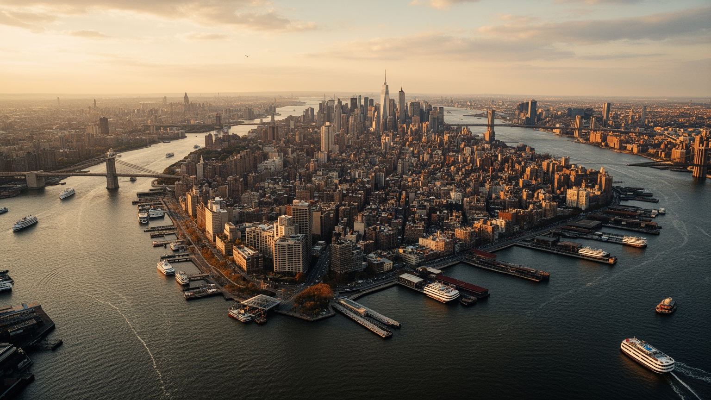
ニューヨークを読む入口は、摩天楼よりも港と河口です。マンハッタンはハドソン川、イースト川、ニューヨーク湾に囲まれ、内陸の河川交通と大西洋航路を結ぶ場所として成長しました。自由の女神やエリス島は観光の象徴である前に、移民、検疫、入国管理、国家の境界を記憶する水辺です。港湾機能は現在、ニュージャージー側や外縁部へ大きく移りましたが、コンテナ、燃料、食品、建材、郵便、空港物流は今も都市圏の生活を支えています。五つの区は同じ市名でまとめられていても、水辺との関係は違います。マンハッタンは金融と観光の島、ブルックリンは港湾と住宅と再開発の混在、クイーンズは空港と多言語生活、ブロンクスは本土側の交通結節、スタテン島は郊外性の強い湾岸として見えます。さらに海抜の低い土地、埋立地、古い工業用地は、高潮や浸水、土壌汚染、再開発の問題を抱えます。水辺の公園や遊歩道は都市の魅力を高めますが、同時に不動産価格を押し上げ、従来の労働地区を変えていきます。橋とフェリーの動線をたどると、都市が島の集合であり、つなぐ設備に依存していることが分かります。沿岸を歩けば、観光船、貨物、住宅、発電、記念碑が隣り合い、海が都市の表面だけでなく裏側も支えていることが見えてきます。水辺は景色ではなく、貿易、移民、防衛、災害、住宅価格を左右する都市の骨格です。
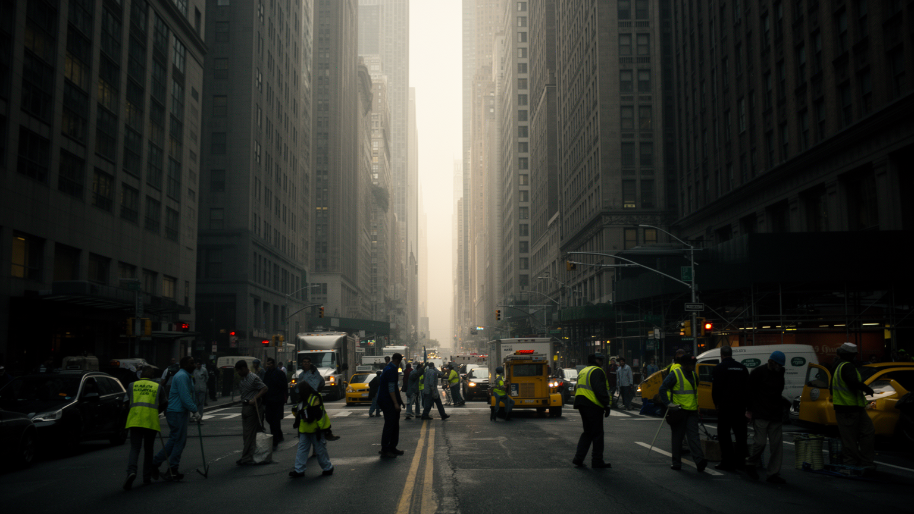
ウォール街はニューヨークの強力な記号ですが、都市経済は証券取引だけでは動きません。金融、法律、会計、保険、広告、コンサルティングが世界の資本を扱い、病院、大学、研究機関、出版社、テレビ局、劇場、レストラン、ホテルが別の厚い雇用を作ります。その下には清掃、警備、調理、配達、介護、保育、建設、地下鉄保守、港湾作業、ビル管理があり、都市の滑らかさを毎日維持しています。問題は、世界市場から得る富と、都市を支える人の生活費が大きくずれることです。高収入の専門職は都心近くに住みやすく、低賃金の労働者ほど遠い地区や郊外から長く通う傾向があります。パンデミック後の働き方の変化は、オフィス街、昼食店、清掃契約、通勤鉄道にも影響しました。リモート勤務が選べる人と、現場に立たなければ賃金を得られない人の差は、都市の階層をさらに見えやすくしました。労働組合、最低賃金、チップ文化、移民労働者の権利も、都市経済を読む重要な入口です。ニューヨークの経済力を読むには、株価やオフィス賃料だけでなく、夜明け前の地下鉄、配達の時間、病院の交代勤務、家賃を払うための複数仕事まで含める必要があります。世界都市の豊かさは、誰の時間で維持されているのかを問われ続けます。数字の大きさより、働く人が残れる条件こそ都市の持続性を示します。
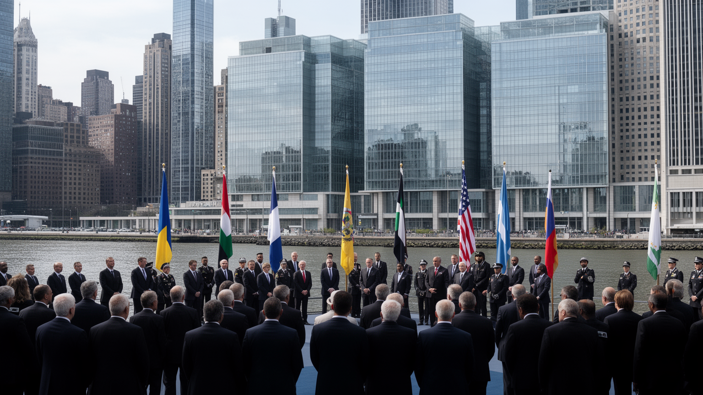
ニューヨークはワシントンのような政治首都ではありません。それでも国連本部が置かれ、各国代表部、国際NGO、報道機関、金融市場が集まるため、世界政治の反応が街に入り込みます。国連総会の時期には交通規制、警備、抗議活動、首脳会談、記者会見が都心の動きを変えます。外交の場は会議室だけでなく、ホテル、レストラン、ミッション周辺の歩道、記者の待機場所にも広がります。この都市の政治性は国際機関だけではありません。移民の権利、警察と人種差別、学校予算、住宅政策、労働組合、気候正義をめぐる議論が、地区ごとの選挙や街頭行動として現れます。市長と市議会の判断は、住宅建設、地下鉄治安、学校、露店、保護施設の配置として生活に直結します。世界都市であるほど、外交と近所の政治は切り離せません。大使館街の儀礼と地域集会の怒りが同じニュース面に載る点に、この都市の政治的な密度があります。金融市場は戦争、制裁、選挙、感染症に即座に反応し、その影響は投資家だけでなく雇用や市財政にも及びます。ニューヨークは国家の首都ではないからこそ、外交、市民運動、市場が一つの都市空間で見える場所です。世界の緊張は遠いニュースではなく、交通規制、デモ、報道ヘリ、警備の柵として経験されます。街は国際秩序の舞台であり、住民政治の現場でもあります。
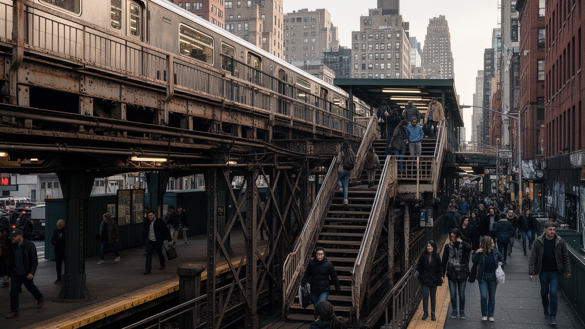
ニューヨークの地下鉄は観光の移動手段ではなく、階層、地区、時間帯を結ぶ都市の骨格です。古い路線はマンハッタン中心に集中しながら、ブルックリン、ブロンクス、クイーンズへ放射し、仕事、学校、病院、劇場、礼拝、夜勤を支えます。二十四時間運行の印象は強いものの、老朽化、遅延、浸水、エレベーター不足、治安不安、運賃負担は日常の課題です。橋、トンネル、通勤鉄道、フェリー、空港アクセス、バス、自転車レーンも、都市圏を成立させる基盤として働きます。特にハドソン川を越える移動は、ニュージャージー側の住宅と職場をマンハッタンに結び、都市の経済圏を市境の外へ広げます。駅の階段を上れない人、乳母車を押す人、夜遅く働く人にとって、設備の小さな不足は移動の権利の問題になります。信号更新や排水工事のような地味な投資は、都市の公平性そのものです。バスの遅れや駅の閉鎖は、時間給で働く人の賃金や保育の迎え時間にも響きます。インフラは単なる設備ではなく、誰がどの仕事に届き、誰が夜に安全に帰れるかを決める制度です。高層ビルの華やかさの下には、排水、電力、信号、駅員、保守作業員の不断の手入れがあります。基盤が弱ると、都市の自由はすぐに不平等へ変わります。古い設備を直す予算配分も、地区間の力関係を映します。日々の遅延は生活の余裕を削ります。
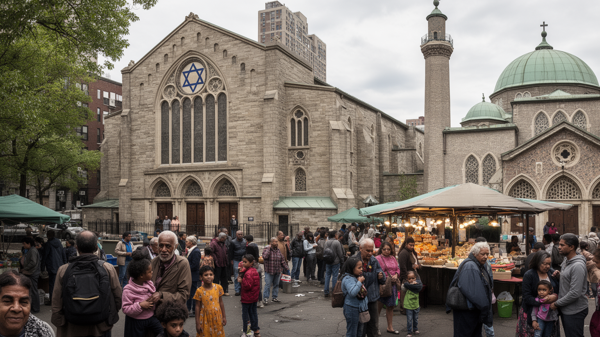
ニューヨークの多様性は観光向けの飾りではなく、移民が住み、働き、学び、祈る生活の蓄積です。クイーンズの多言語の商店街、ブルックリンのユダヤ教コミュニティ、ハーレムの黒人教会、ブロンクスのラテン系住民、南アジア、東アジア、カリブ、アフリカ系の店や礼拝所は、都市の食と音、休日のリズムを作ります。宗教施設は礼拝の場所であると同時に、移住直後の相談、教育、仕事探し、葬送、食のルール、災害時の支援を担うことがあります。移民の経験は希望だけではありません。言語、在留資格、差別、家賃、医療、学校の壁があり、世代が変わると地区の記憶も変化します。学校では家庭の言語と英語教育が交差し、病院や行政窓口では通訳の有無が生活の安心を左右します。宗教上の食や休日を尊重できる職場かどうかも、住みやすさに関わります。礼拝後の食事や祭礼の準備は、孤立しやすい大都市で人を結び直す時間にもなります。再開発や家賃上昇は、古い移民街を観光資源に変える一方で、実際に支えてきた住民を遠ざけます。ニューヨークを多文化都市として読むには、祭りや料理を楽しむだけでなく、その背後の互助、宗教、労働、住まいの緊張を見る必要があります。違いが共存する力は、毎日の調整から生まれます。礼拝所や学校の掲示も、多言語都市の実務を示します。声の違いが街の厚みになります。
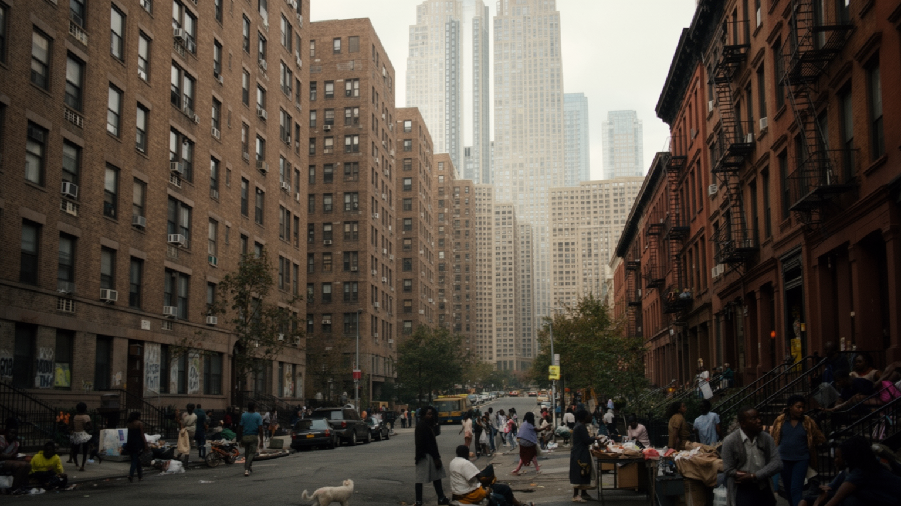
ニューヨークの暮らしを最も強く決める条件の一つが住宅費です。都市は仕事、文化、教育、医療、出会いの選択肢を与えますが、その近くに住み続ける費用は非常に高い。家賃規制住宅、公営住宅、高級コンドミニアム、古いアパート、地下住戸、郊外の一戸建てが同じ都市圏に並び、住む場所によって学校、通勤、治安、医療、食料品店への距離が変わります。再開発は老朽建物を更新し税収を増やす一方、小さな店、低所得者、長く住んだ移民家族を押し出すことがあります。ホームレス問題は景観の問題ではなく、住宅供給、精神医療、薬物依存、雇用、家族関係、行政支援が重なる社会問題です。子育て世帯は学校区と家賃の板挟みになり、高齢者は家賃上昇や建物の老朽化で地域に残りにくくなります。住宅の狭さは在宅勤務、勉強、介護、暑熱時の避難にも影響します。退去の不安がある暮らしでは、近所の関係や子どもの学びも安定しません。富裕層向けの高層住宅が空に伸びるほど、通勤する清掃員や介護士が遠くへ追いやられるなら、都市の豊かさは偏ります。ニューヨークの自由は、誰でも挑戦できるという物語を持ちますが、家賃がその入口を狭めています。住宅は個人の消費財ではなく、都市参加の条件です。住まいを守る制度の厚みが、多様性を実体のあるものにします。鍵を持てることが自由の入口です。
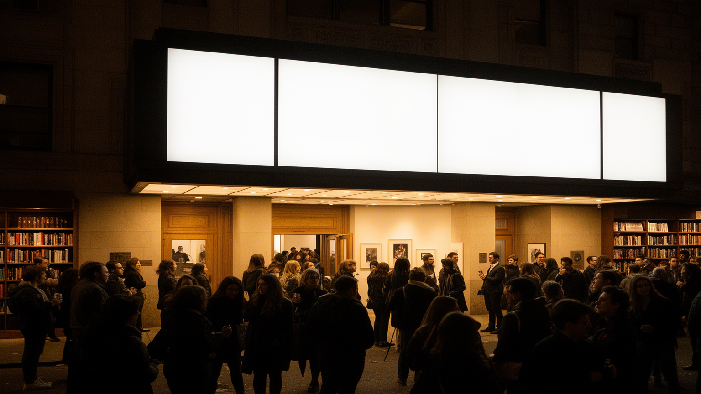
ニューヨークの文化は、ブロードウェイの劇場街だけで完結しません。ハーレムの黒人文化、ブロンクスのヒップホップ、ブルックリンの小劇場とギャラリー、クイーンズの移民音楽、マンハッタンの美術館、出版社、新聞、テレビ局、ファッション産業が互いに影響し合います。文化の厚みは、巨大な制度と小さな場所の両方から生まれます。大美術館や有名劇場は世界から観客を呼びますが、稽古場、地下クラブ、独立系書店、地域紙、学校の発表会、コミュニティラジオも都市の表現を支えます。メディア産業は政治、金融、芸能、広告を結び、都市の出来事を世界へ伝える力を持ちます。その一方、制作現場には長時間労働、賃金の不安定さ、場所代の高騰、商業化の圧力があります。地区の記憶を使った作品や観光は、地域の誇りにもなりますが、消費されるだけなら住民の場所を奪うこともあります。文化施設の周辺で家賃が上がると、作り手自身が離れざるを得ません。学校や図書館が若い表現者を支える役割も大きく、文化は市場だけで育つわけではありません。ニューヨークの文化は、自由な表現の象徴であると同時に、誰が舞台に立てるか、誰の物語が売れるかをめぐる競争の場です。文化都市の価値は、有名作品の数だけでなく、小さな声が消えずに残れるかで測られます。場所の余白が表現の多様さを守ります。
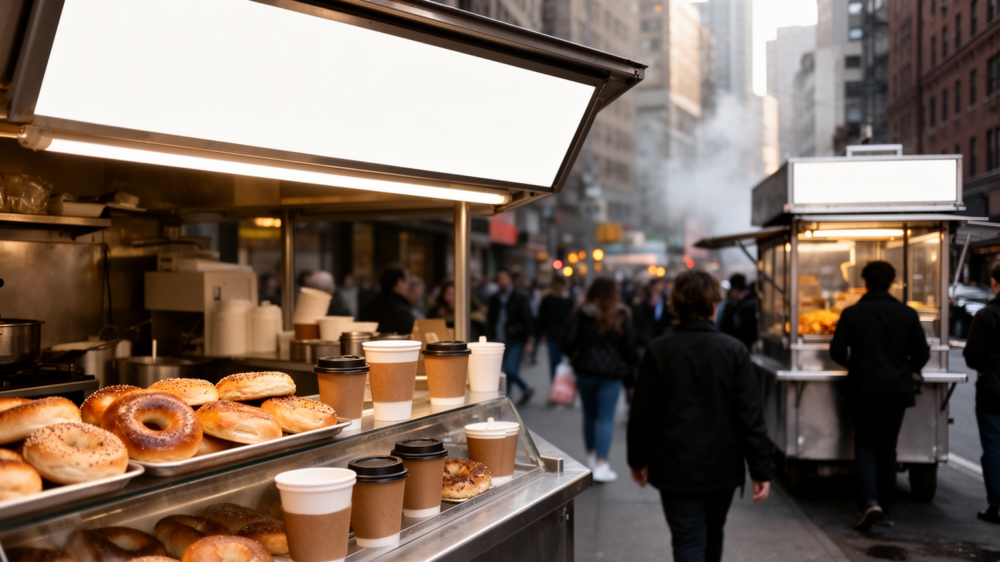
ニューヨークの食は、名物を並べるだけでは見えません。ベーグル、ピザ、デリ、ホットドッグ、ドミニカ料理、中華、韓国料理、南アジア料理、カリブ料理、ハラール屋台、フードトラック、深夜のダイナーは、移民と労働時間の地図です。朝の通勤客がコーヒーを買い、医療従事者が夜勤後に食べ、学生が安い店を探し、観光客が有名店に並ぶ。同じ食の場所が、階層や目的の違う人を短時間だけ同じ歩道に集めます。食文化を支えるのは、仕入れ、配送、市場、厨房、清掃、許認可、家族経営、移民労働です。人気地区では家賃が上がり、長く続いた店が閉じる一方、新しい店が都市の変化を示します。宗教上の食のルールに応える店や、母語で注文できる食料品店は、移民にとって生活の安全網にもなります。高級レストランの背後にも、洗い場、仕込み、配達、予約管理の労働があります。学校給食、フードパントリー、市場価格も、豊かな食の都市にある別の現実です。食は多文化共生の楽しい入口ですが、労働条件や商業化の問題も映します。ニューヨークの日常は、華やかな夕食だけでなく、地下鉄に乗る前の紙袋、学校帰りの軽食、礼拝後の食卓、遅い時間の配達によってできています。食べる場所を追うと、都市が誰の腹を満たし、誰を疲れさせるかが見えてきます。味の記憶は、住む場所の記憶でもあります。
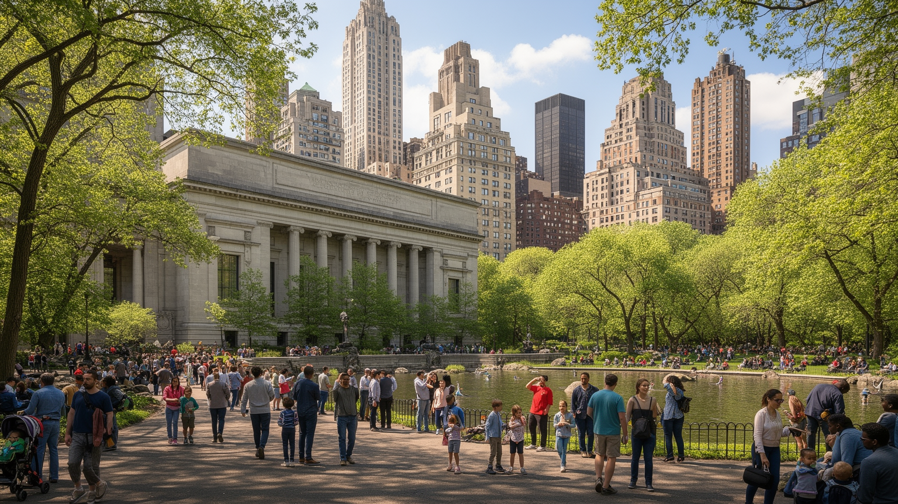
ニューヨーク観光は、自由の女神、タイムズスクエア、セントラルパーク、メトロポリタン美術館、ブロードウェイ、ブルックリン橋を高速に巡るだけでは十分ではありません。公共空間の使われ方を見ると、都市の性格がよりはっきりします。セントラルパークは緑地であり、階層の違う住民と観光客が同じ場所を使う都市装置です。タイムズスクエアは広告の劇場であり、過密な歩行者空間でもあります。ハイラインやウォーターフロントの再整備は、古いインフラを魅力へ変えましたが、周辺の不動産価格も押し上げました。広場、橋、フェリー、歩道、駅前は、記念写真の背景であると同時に、抗議、追悼、物売り、演奏、通勤、休息の場所です。美術館や劇場は高額な体験になりやすい一方、図書館、公園、無料イベントは都市の文化を開く入口になります。観光客が使う街路は、住民の通学路や買い物道でもあります。路上の演奏者、露店、清掃員、警察、案内係の存在も、観光体験の一部です。観光収入は市の経済を支えますが、混雑、短期滞在、店舗の入れ替わりは住民の日常を変えます。ニューヨークを訪れる価値は、有名な記号を見ることに加え、その記号が誰の生活空間と重なっているのかを観察する点にあります。公共空間は都市の寛容さと緊張を同時に映します。名所の足元ほど、生活の声が集まります。
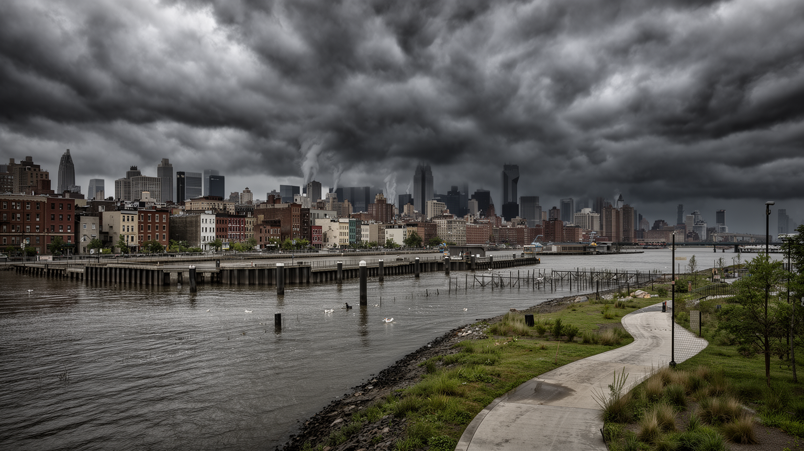
ニューヨークは水辺に開いた都市であるため、気候リスクも水辺から強く現れます。高潮、ハリケーン、豪雨、地下鉄の浸水、停電、暑熱は、都市の基盤と社会格差を同時に試します。湾岸の高級住宅、古い工業地、低所得地区、公共住宅、病院、発電設備、地下駅は、それぞれ違う形で危険にさらされます。防潮堤、湿地再生、排水設備、建物のかさ上げ、緑地、避難計画は必要ですが、工事だけで安全は完成しません。高齢者、障害のある人、英語が苦手な住民、地下住戸に住む人、医療機器に電力が必要な人へ情報と支援が届くかが、災害時の結果を変えます。猛暑も重要です。アスファルトと高層建築は熱をため、屋外労働者や冷房費を払えない世帯に負担をかけます。保険料や修繕費の上昇は、住み続ける力にも影響します。災害後の復旧が早い地区と遅い地区の差は、都市の不平等を可視化します。冷房のある公共施設、日陰、街路樹、避難情報の多言語化は、気候適応を生活の問題に戻します。ニューヨークの水辺再開発は美しい遊歩道を生みますが、同時に誰を守り、誰を置き去りにするのかを問われます。沿岸都市としての未来は、景観の改善ではなく、回復力と公平性をどう両立するかにかかっています。水辺の魅力を守るには、水辺に住む人の安全も同時に守る必要があります。備えの差は災害後の回復速度にも表れます。
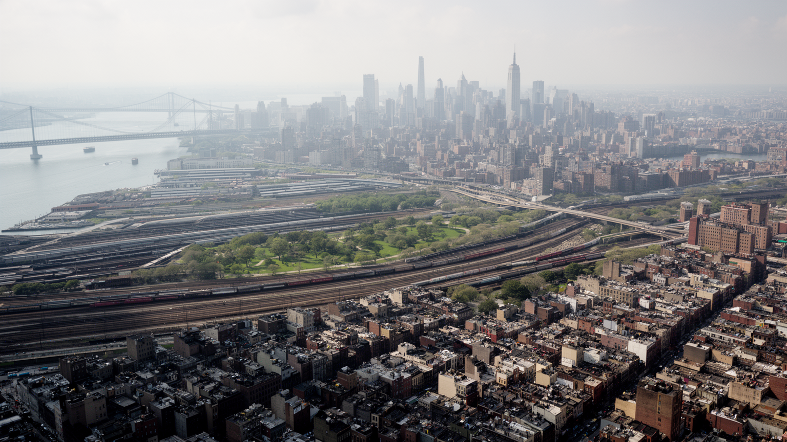
ニューヨークが世界都市の第一候補として読まれるのは、経済規模が大きいからだけではありません。港、移民、金融、国連、地下鉄、劇場、宗教、大学、住宅危機、気候リスクが同じ都市圏に重なり、現代都市の希望と矛盾を濃く示すからです。この都市は、世界から人を引き寄せる自由の物語を持ちながら、住み続ける費用の高さで多くの人を押し出します。金融市場は世界を動かしますが、そのビルを清掃し、食事を作り、地下鉄を動かす人の生活は不安定になりがちです。移民街は文化の魅力として消費されますが、言語、在留資格、学校、医療、家賃の問題は残ります。観光客が見る光景と住民が背負う負担は、同じ歩道にあります。だからニューヨークを読むことは、成功した都市を称賛するだけでなく、成功がどのような不平等と依存の上に立つのかを考えることです。都市の強さは、衝突を消すことではなく、衝突の中で制度、交通、住宅、文化を更新し続ける力にあります。世界の資本が集まる場所で、子どもが学校へ行き、高齢者が買い物をし、移民が祈る生活が続くことに意味があります。明るい看板、古い地下鉄、水辺の風、礼拝所、屋台、デモの列を一緒に見ると、都市の複数性が見えてきます。ニューヨークは完成品ではなく、衝突しながら更新される都市です。読むべき核心は、その衝突を隠さない公共性にあります。